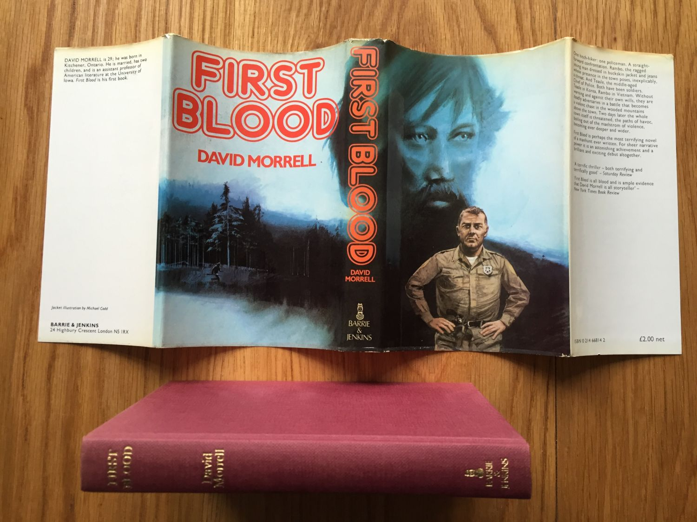
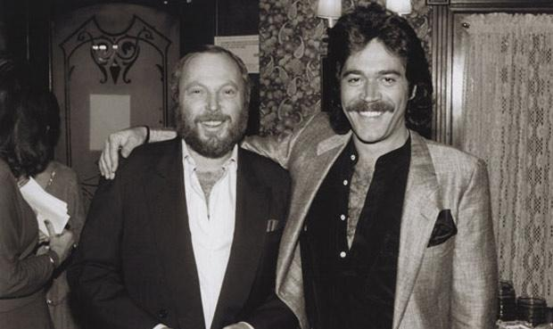
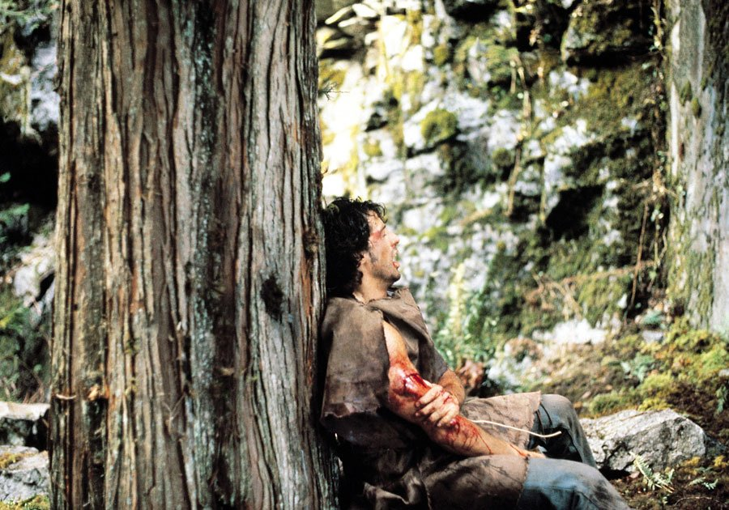
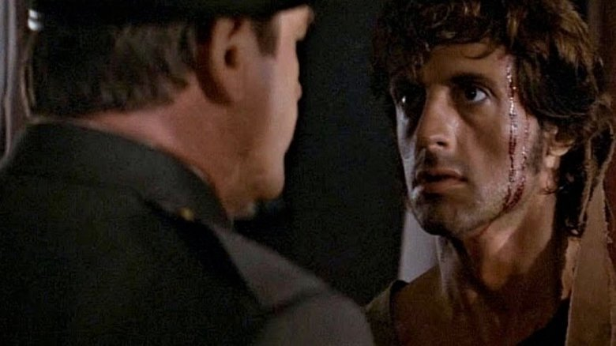

1. Селектор тега
Отрабатываю селектор тега p, получилось, ура!!!
Отрабатываю селектор тега a.Отрабатываю селектор тега span. И для лучшего понимания пишу ещё немного текста.
2. Селектор класса
Работаю с тегом p с классом ordinary-p. Понимаю что имя класса не красивое но пока пусть так)
Работаю с тегом a.Работаю с тегом span с классом ordinary-span который вложен в тег P. Применятся ли стили?
3. Селектор ID
Селектор ID уже применён к div-ам которые являютя якорями.
4. Комбинации селекторов (Рэмбо)
Роман «Первая кровь» открыл обывателю внутренний мир вьетнамского ветерана
…но кажется, сделал это слишком рано. На тот момент образ безумного вьетнамского ветерана, который мы увидим у Копполы или Чимино, в культуре просто отсутствовал.Писатель Дэвид Моррелл был канадцем и не воевал, но сильно впечатлился студенческими волнениями в США 60-х, напрямую связанными с войной во Вьетнаме. Так родилась идея книги о вернувшемся домой солдате, который устраивает резню в родном городе.
Когда Морелл работал над книгой, его жена купила яблоки сорта Rambo
Этот сортбыл выведен в Швеции несколько веков назад в семье фермера Питера Гуннарссона Рэмбо. Морреллу очень понравилось название: в нем он чувствовал какой-то «звук силы», и он решил так назвать своего героя. С шведского языка Rambo переводится как «воронье гнездо», поэтому бывший военный получил позывной «Ворон». В книге, кстати, у Рэмбо нет имени — Джоном он станет уже в кино.
Сценарий фильма пережил 26 драфтов
Права на экранизацию книги купила Columbia Pictures в начале 70-х, задумывая сделать из него шумный и жесткий боевик. Но неожиданно картина угодила в производственный ад: сценарии писались и переписывались с невероятной скоростью, затем права перекупила Warner Brothers в надежде довести «Рэмбо» до кинотеатров. К тому времени Вьетнамская война подошла к концу, и никто из студийных боссов не горел желанием делать коммерческое кино про войну.
Сценарий на несколько лет отправился на полку, но успех «Охотника на оленей» и «Апокалипсиса сегодня» возродил к нему интерес. В итоге, после 26 итераций проект оказался в руках двух независимых продюсеров — Марио Кассара и Эндрю Вайны, которые довели его до кинотеатров.
В целях экономии фильм снимали в Канаде. Зимой!
Так как «Первой кровью» в итоге занималась не большая голливудская студия, а независимая — Carolco , съемки решено было перенести в Канаду, чтобы удешевить производство. Снимали в маленьком городке Хоуп зимой, и погода была не на стороне съемочной группы — постоянно шел дождь и снег, задувал мощный ветер. Во время съемок в лесу из-за плохой видимости кинематографистам запрещали отходить друг от друга на большое расстояние — заблудиться там было проще простого. Несмотря на плохую погоду и легкую одежду, Сталлоне умудрился ни разу не заболеть во время съемок.
Почти все трюки Сталлоне выполнял сам — и страдал
В одной из сцен он даже сломал несколько ребер, но продолжил съемки. В некоторых сценах актер не играет, а действительно страдает от настоящей боли. Досталось и другим актерам: например, во время сцены побега из тюрьмы Сталлоне случайно сломал нос актеру Альфу Хамфрису, ударив его локтем по лицу. По случайному совпадению то же самое в книге — в той же сцене и с тем же персонажем! — делает и Рэмбо. Хамфрису, правда, это не очень понравилось — остаток съемок он проходил с пластырем на лице.
В одной из сцен он даже сломал несколько ребер, но продолжил съемки. В некоторых сценах актер не играет, а действительно страдает от настоящей боли. Досталось и другим актерам: например, во время сцены побега из тюрьмы Сталлоне случайно сломал нос актеру Альфу Хамфрису, ударив его локтем по лицу. По случайному совпадению то же самое в книге — в той же сцене и с тем же персонажем! — делает и Рэмбо. Хамфрису, правда, это не очень понравилось — остаток съемок он проходил с пластырем на лице.
Съемочная группа долго не могла определиться с финалом фильма
В книге Рэмбо в конце умирает от рук полковника Траутмана, но Сталлоне был категорически против такого финала. Ему казалось, что в фильме про ветерана войны в финале у зрителей должна быть какая-то надежда на светлое будущее. Режиссер Тед Котчефф колебался на протяжении всего периода съемок и в итоге снял два варианта финала — трагический и тот, в котором Рэмбо выживает. Судьбу концовки решили отдать в руки фокус-групп. Почти единогласно зрители выбрали радужный финал — смотреть на смерть Рэмбо никто не хотел. Сталлоне победил и фильм вышел в таком виде в прокат.
span span span ссылкаСъемочная группа долго не могла определиться с финалом фильма
В книге Рэмбо в конце умирает от рук полковника Траутмана, но Сталлоне был категорически против такого финала. Ему казалось, что в фильме про ветерана войны в финале у зрителей должна быть какая-то надежда на светлое будущее. Режиссер Тед Котчефф колебался на протяжении всего периода съемок и в итоге снял два варианта финала — трагический и тот, в котором Рэмбо выживает. Судьбу концовки решили отдать в руки фокус-групп. Почти единогласно зрители выбрали радужный финал — смотреть на смерть Рэмбо никто не хотел. Сталлоне победил и фильм вышел в таком виде в прокат.
span ссылка ссылка ссылка